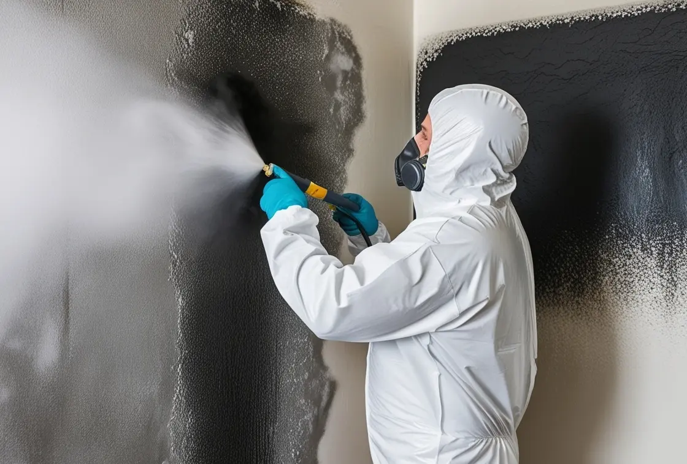

SOBRE NANO-NEX
LIMPIEZA CON HIELO SECO
¿Métodos Antiguos que No Funcionan?
¿Estás realmente cansado de esa suciedad incrustada que parece desafiar cualquier método de limpieza tradicional?
❄️ Limpieza con Hielo Seco: La Revolución de la limpieza
Hablemos de algo que está transformando de verdad el mundo de la limpieza: la Limpieza con Hielo Seco.
Esto no es un método de limpieza cualquiera. Es una técnica revolucionaria que emplea pequeños pellets de dióxido de carbono que están congelados a -78º C.
La clave es la precisión: con esa tecnología, somos capaces de eliminar suciedad, óxido o cualquier contaminante, pero sin tocar la integridad de la superficie original.
¡Es un método que respeta lo que más valoras!
Es, sencillamente, una manera inteligente de devolverle la vida a sus espacios. La innovación al servicio de la limpieza. Un nuevo comienzo está al alcance de la mano.

¿Necesitas una limpieza?
Limpieza con lázer . Limpieza Criogénicas . Hielo seco . Eliminación de olores . Vertidos accidentales . Olor de humedad
Nº1 EN SERVICIOS DE LIMPIEZA CON HIELO SECO
🧊 ¿Cómo Funciona la Limpieza con Hielo Seco? ¡La Ciencia Detrás!
-
Si te preguntas cómo es posible que esta técnica sea tan efectiva, te lo explico de forma muy sencilla. La clave está en tres fenómenos que ocurren casi a la vez:
-
Impacto y Enfriamiento (El Golpe Seco):
Imagina que lanzamos esos pequeños pellets de hielo seco (a -78ºC) contra la superficie a una velocidad altísima. El impacto congela la suciedad de inmediato, haciéndola rígida y quebradiza. Es decir, la preparamos para que se desprenda.
-
Sublimación (El Secreto de la Limpieza Cero Residuos):
Este es el punto mágico. El hielo seco no se derrite, sino que se transforma directamente en gas (dióxido de carbono, CO2). Este cambio se llama sublimación. Lo importante: no deja ni una gota de humedad ni residuos secundarios, y al expandirse, arrastra consigo toda la suciedad que ya estaba desprendida.
-
Limpieza Profunda (Llegando a Todos los Sitios):
La bajísima temperatura provoca microfracturas en la suciedad incrustada. Esto permite que el gas se cuele por los huecos más diminutos, logrando una limpieza profunda incluso en esas zonas de difícil acceso que los métodos tradicionales simplemente no pueden alcanzar.
En resumen, es un método preciso, sin residuos y con una base científica muy sólida para dejarlo impecable.
-
¿Necesitas un rescate urgente para tus superficies?
¡No sigas buscando!
La limpieza con hielo seco es la clave para devolverles vida y esplendor a tus objetos más queridos. Contáctanos hoy y abre la puerta a un universo de posibilidades con una limpieza innovadora, sostenible y respetuosa con el medio ambiente, que transforma tus espacios con un propósito claro.
¡Es el momento de renovar con consciencia!
¿En qué superficies se puede utilizar?
-
Patrimonio histórico y artístico: La limpieza con hielo seco restaura con delicadeza piedra, mármol, madera, frescos, pinturas y esculturas, preservando su esencia única sin alterar su estructura.
-
Industria: Perfecta para revitalizar maquinaria, motores, moldes, circuitos electrónicos y equipos de precisión con un cuidado excepcional.
-
Alimentación: Elimina con seguridad grasas, aceites, bacterias y contaminantes en cintas transportadoras, hornos, tanques y equipos, asegurando un entorno limpio y renovado.
Ventajas de la limpieza con hielo seco:
-
No abrasiva: La limpieza con hielo seco cuida las superficies más delicadas, evitando químicos y abrasivos para preservar su esencia intacta.
-
Eficaz: Transforma tus espacios al eliminar con potencia todo tipo de contaminantes, incluso los más resistentes, con resultados que inspiran.
-
Precisa: Permite un cuidado selectivo, limpiando con detalle solo las áreas necesarias, respetando el entorno con una precisión que emociona.
-
Ecológica: Abraza el cuidado del planeta al no generar residuos ni contaminar, ofreciendo una limpieza consciente y sostenible.
-
Segura: Protege la salud de quienes la aplican al evitar químicos peligrosos, promoviendo un entorno de trabajo lleno de bienestar.
SOBRE NANO-NEX
Ejemplo de APLICACIONES Y RESULTADOS
Limpieza con lázer . Limpieza Criogénicas . Hielo seco . Eliminación de olores . Vertidos accidentales . Olor de humedad